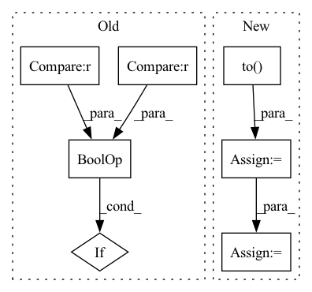

Pattern ID :24740
Before Change
context_dataset = train_dataset
elif config.contextualized_calibrate.use_split == "valid":
context_dataset = valid_dataset
elif config.contextualized_calibrate.use_split is None and config.contextualized_calibrate.num_example is not None :
sampler = FewShotSampler(num_examples_total=config.contextualized_calibrate.num_example,
also_sample_dev=False)
context_dataset = sampler(train_dataset)After Change
all_logits = []
prompt_model.eval()
for batch in tqdm(dataloader,desc="ContextCali"):
batch = batch.to( prompt_model.device)
logits = prompt_model.forward_without_verbalize(batch)
all_logits.append(logits.detach())
all_logits = torch.cat(all_logits, dim=0)
return all_logits.mean(dim=0)In pattern: SUPERPATTERN
Frequency: 4
Non-data size: 7
Instances Fragment ID: 76608340
Project Name: thunlp/openprompt
Commit Name: 62ab56d64ffd51137a51df8c2a049bfe4816a99c
Time: 2021-11-07
Author: shengdinghu@gmail.com
File Name: openprompt/utils/calibrate.py
M Class Name: AnonimousClass
N Class Name: AnonimousClass
M Method Name: calibrate(2)
N Method Name: calibrate(4)
M Parent Class:
N Parent Class:
M File Name: openprompt/utils/calibrate.py
N File Name: openprompt/utils/calibrate.py
M Start Line: 49
M End Line: 71
N Start Line: 27
N End Line: 44
Before Change
context_dataset = train_dataset
elif config.contextualized_calibrate.use_split == "valid":
context_dataset = valid_dataset
elif config.contextualized_calibrate.use_split is None and config.contextualized_calibrate.num_example is not None :
sampler = FewShotSampler(num_examples_total=config.contextualized_calibrate.num_example,
also_sample_dev=False)
context_dataset = sampler(train_dataset)After Change
all_logits = []
prompt_model.eval()
for batch in tqdm(dataloader,desc="ContextCali"):
batch = batch.to( prompt_model.device)
logits = prompt_model.forward_without_verbalize(batch)
all_logits.append(logits.detach())
all_logits = torch.cat(all_logits, dim=0)
return all_logits.mean(dim=0) Fragment ID: 76608341
Project Name: thunlp/openprompt
Commit Name: 4a07b071ec137a6ce4a3f80159fe0b6abda87cf1
Time: 2021-11-07
Author: shengdinghu@gmail.com
File Name: openprompt/utils/calibrate.py
M Class Name: AnonimousClass
N Class Name: AnonimousClass
M Method Name: calibrate(2)
N Method Name: calibrate(4)
M Parent Class:
N Parent Class:
M File Name: openprompt/utils/calibrate.py
N File Name: openprompt/utils/calibrate.py
M Start Line: 49
M End Line: 71
N Start Line: 27
N End Line: 44
Before Change
edge_index = []
for graph_id in range(len(valid_len)):
for edge in permutations([i for i in range(time_step_len)], 2):
if edge[0] < valid_len[graph_id] and edge[1] < valid_len[graph_id] :
edge_index.append([edge[0] + graph_id*time_step_len, edge[1] + graph_id*time_step_len])
edge_index = torch.tensor(edge_index).transpose(1, 0)
edge_index, _ = add_self_loops(edge_index, num_nodes=x.size(0))After Change
// cosntruct the fully connected graph(s)
edge_index = torch.Tensor([]).to(self.device)
for graph_id in range(len(valid_len)):
node_list = torch.Tensor([i for i in range(valid_len[graph_id])]).to( self.device) + graph_id*time_step_len
edge_index = torch.cat((edge_index, torch.combinations(node_list, 2)), 0)
edge_index = edge_index.transpose(1, 0).long()
edge_index, _ = add_self_loops(edge_index, num_nodes=x.size(0))
Fragment ID: 76608347
Project Name: henry1iu/tnt-trajectory-predition
Commit Name: d5d6d744a19e4a69c600bacf0dea23a00fc624c5
Time: 2021-01-15
Author: liu.jb.henry@gmail.com
File Name: core/model/layers/global_graph.py
M Class Name: SelfAttentionLayer
N Class Name: SelfAttentionLayer
M Method Name: forward(4)
N Method Name: forward(4)
M Parent Class: MessagePassing
N Parent Class: MessagePassing
M File Name: core/model/layers/global_graph.py
N File Name: core/model/layers/global_graph.py
M Start Line: 58
M End Line: 63
N Start Line: 75
N End Line: 79